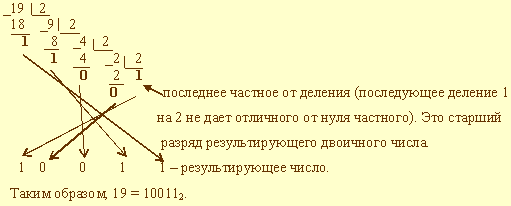

исходное целое число делится на основание системы счисления, в которую переводится (2 или 16); получается частное и остаток;
если полученное частное не делится на основание системы счисления так, чтобы образовалась целая часть, отличная от нуля,
процесс умножения прекращается, переходят к шагу в). Иначе над частным выполняют действия, описанные в 1 шаге;
все полученные остатки и последнее частное преобразуются в соответствии с таблицей в цифры той системы счисления, в которую выполняется перевод;
формируется результирующее число: его старший разряд - полученное последнее частное, каждый последующий младший разряд образуется
из полученных остатков от деления, начиная с последнего и кончая первым. Таким образом, младший разряд
полученного числа - первый остаток от деления, а старший - последнее частное.
Пример выполнения перевода числа 19 в двоичную систему счисления:

Пример выполнения перевода числа 1316 в десятичную систему счисления:
1316 = 1*161 + 3*160 = 16 + 3 = 19
Правило перевода дробных чисел:
Отдельно переводится целая часть числа, отдельно - дробная. Результаты складываются.
<--Назад
Вперёд-->